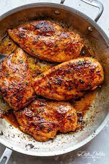

Cajun Chicken Recipe
My Amazing Seared Chicken Recipe

The Cajun Chicken Breast recipe I use is one of my favouritesas it's pretty quick, easy, and healthy to make.
For meal prep or just because you have the craving to have some chicken this is always an excellent choice to make.
Ingredients
- Chicken Breast
- Cajun Seasoning
- Olive Oil
Directions
- Tenderize chicken breast until chicken until an overall equal thickness is achieved.
- Season chicken generously with cajun seasoning until the spices are evenly distributed.
- Pre-heat olive oil in a cast iron skillet over medium-high heat. Once ready add chicken to pan and sear 4 to 5 minutes on each side, flipping only once, until an internal temperature of 165 degrees is reached.
- Remove from heat, let rest for 5 minutes. Serve over a bed of rice or a side of mashed potatoes, and your choice of vegetables/salad.